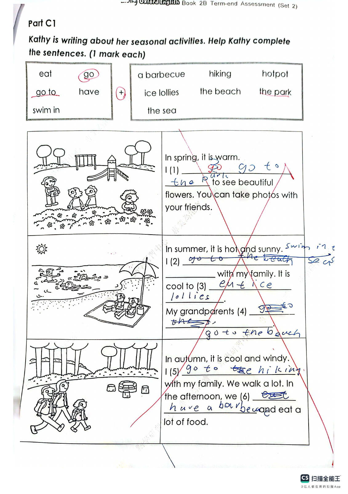
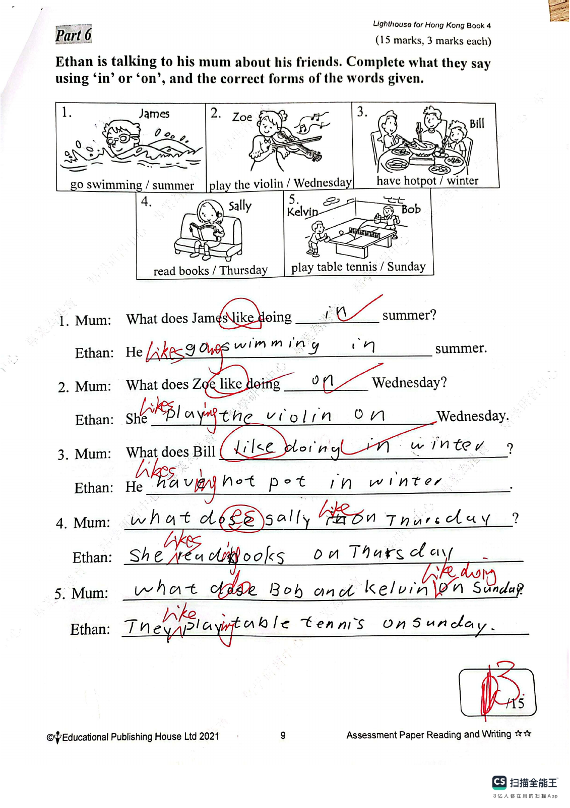

Answer: (a) 27 minutes; (b) 9:00 p.m.
已掌握
| # | 单词/词组 | 中文意思 | 例句/说明 | 已掌握 |
|---|---|---|---|---|
| noun 名词 | ||||
| 1 | present | 礼物 | I got a present from my mother. | |
| 2 | playroom | 游戏房 | The children are in the playroom. | |
| 3 | friend | 朋友 | My friend is kind. | |
| 4 | hair | 头发 | Her hair is long. | |
| 5 | Friday | 周五 | The school trip is on Friday. | |
| 6 | autumn | 秋天 | The leaves turn yellow in autumn. | |
| 7 | glasses | 眼镜 | He wears glasses. | |
| verb 动词 | ||||
| 8 | send | 发送 | I will send you a postcard. | |
| phrase 短语 | ||||
| 9 | take off | 脱下 | Please take off your shoes. | |
| noun phrase 名词短语 | ||||
| 10 | school hall | 礼堂 | We sing together in the school hall. | |
| adjective 形容词 | ||||
| 11 | tidy | 爱干净的 | My brother is tidy and always puts his toys away. | |
| 12 | lazy | 懒惰的 | The lazy boy did not want to get out of bed. | |
| 13 | wet | 湿润的；湿的 | My shoes are wet from the rain. | |
| adverb 副词 | ||||
| 14 | seldom | 很少 | I seldom eat sweets. | |
| 15 | sometimes | 有时 | I sometimes walk to school. | |
| conjunction 连词 | ||||
| 16 | because | 因为 | I stay home because it is raining. | |
| uncategorized 未分类 | ||||
| 17 | understand | 理解 | I understand the question. | |
| 18 | notice | 通知 | A notice on the door says the library is closed. | |
| 19 | believe | 相信 | I believe you are telling the truth. | |
| 20 | railway | 铁路 | The railway connects the two towns. | |
| # | 单词/词组 | 中文意思 | 例句/说明 | 已掌握 |
|---|---|---|---|---|
| adjective 形容词 | ||||
| 1 | enormous | 巨大的 | The elephant is enormous. | |
| 2 | gentle | 温和的 | Gopal is gentle and polite. | |
| noun 名词 | ||||
| 3 | website | 网站 | The school website has news. | |
| 4 | stationery | 文具 | I put my stationery in my bag. | |
| 5 | fin | 鱼鳍 | A fish has a fin. | |
| 6 | adventure | 奇遇 | The story is a fun adventure. | |
| 7 | musical | 音乐剧 | We watched a musical at school. | |
| 8 | vocabulary | 词汇 | Reading can improve your vocabulary. | |
| 9 | farm | 农场 | Ben wants to go to the farm. | |
| 10 | beef | 牛肉 | Is there any beef? Yes, there is. | |
| 11 | pork | 猪肉 | Dad puts some pork into the pot. | |
| 12 | salt | 盐 | Put the egg and the salt into a bowl. | |
| noun phrase 名词短语 | ||||
| 13 | high jump | 跳高 | He can do the high jump. | |
| 14 | role model | 榜样；模范 | She is a role model for younger students. | |
| 15 | country park | 郊野公园 | I want to go to the country park. | |
| 16 | an onion | 洋葱 | We need an onion for the soup. | |
| 17 | a handbag | 手提包 | They gave me a handbag. | |
| verb 动词 | ||||
| 18 | collect | 收集 | I collect stamps. | |
| 19 | save | 拯救 | We can save the bird. | |
| 20 | mix | 搅拌；混合 | Mix them together with a fork. | |
| phrase 短语 | ||||
| 21 | Causeway Bay | 铜锣湾 | We went shopping in Causeway Bay. | |
| 22 | look after | 照料 | I look after my little sister. | |
| verb phrase 动词短语 | ||||
| 23 | play badminton | 打羽毛球 | I can play badminton but I can't play football. | |
| 24 | pick fruit | 摘水果 | We pick fruit in the fruit fields. | |
| 25 | playing with dolls | 玩洋娃娃 | My sister likes playing with dolls. | |
| 26 | have a buffet meal | 吃自助餐 | We have a buffet meal at the hotel. | |
| noun/verb 名词/动词 | ||||
| 27 | exercise | 锻炼 | Exercise is good for your health. | |
| uncategorized 未分类 | ||||
| 28 | instruction | 要求 | Read each instruction before you start the test. | |
| 29 | following | 接下来的 | Please answer the following questions. | |
| 30 | piano | 钢琴 | My sister plays the piano. | |
| # | 单词/词组 | 中文意思 | 例句/说明 | 已掌握 |
|---|---|---|---|---|
| time/date 时间日期 | ||||
| 1 | April | 四月 | April is the fourth month. | |
| 2 | May | 五月 | May is the fifth month. | |
| 3 | September | 九月 | September is the ninth month. | |
| 4 | Thursday | 星期四 | Thursday is a weekday. | |
| time unit 时间单位 | ||||
| 5 | day | 日 | A day has 24 hours. | |
| numbers 数字 | ||||
| 6 | six | 6 | Six is 6. | |
| 7 | eight | 8 | Eight is 8. | |
| 8 | nine | 9 | Nine is 9. | |
| 9 | thirteen | 13 | Thirteen is 13. | |
| 10 | eighteen | 18 | Eighteen is 18. | |
| 11 | sixty | 60 | Sixty is 60. | |
| 12 | hundred | 百 | One hundred is 100. | |
| solid shape 立体图形 | ||||
| 13 | hexagonal prism | 六棱柱 | A hexagonal prism has hexagonal faces. | |
| 14 | cone | 圆锥 | A cone has one curved face. | |
| 15 | sphere | 球 | A sphere is round. | |
| # | 单词/词组 | 中文意思 | 例句/说明 | 已掌握 |
|---|---|---|---|---|
| numbers 数字 | ||||
| 1 | 3-digit number | 三位数 | A 3-digit number has three digits. | |
| geometry 几何 | ||||
| 2 | perpendicular line | 垂直线 | Perpendicular lines meet at a right angle. | |
| 3 | line segment | 线段 | Draw a line segment. | |
| 4 | opposite side | 对边 | In a rectangle, the opposite sides are equal. | |
| question word 题目词 | ||||
| 5 | estimate | 估计 | Estimate the answer first. | |
| 6 | count | 数数 | Count from 1 to 10. | |
| 7 | onwards | 向前；继续向前 | Count onwards from 20. | |
| 8 | backwards | 向后；倒着 | Count backwards from 20. | |
| place value 位值 | ||||
| 9 | units | 个位 | The digit is in the units place. | |
| comparison 比较 | ||||
| 10 | lighter | 更轻的 | A pencil is lighter than a brick. | |
| 11 | lightest | 最轻的 | The 1 kg bag is the lightest of the 1 kg, 2 kg and 3 kg bags. | |
| time/date 时间日期 | ||||
| 12 | leap year | 闰年 | A leap year has 366 days. | |
| 13 | non-leap year | 平年 | A non-leap year has 365 days. | |
| 14 | midnight | 半夜；午夜（凌晨零点） | Midnight is twelve o'clock at night. | |
| position 位置 | ||||
| 15 | behind | 后面 | The bag is behind the chair. | |
| 16 | front | 前面 | The door is at the front of the room. | |
| 17 | above | 上面 | The clock is above the board. | |
| 18 | arrow | 箭头 | The arrow points to the right. | |
| operations calculation 运算 | ||||
| 19 | dividend | 被除数 | The dividend is divided by the divisor. | |
| teacher math vocabulary 老师数学词汇 | ||||
| 20 | each | 每个 | Each child has three pencils. | |
| currency money 货币 | ||||
| 21 | exchange | 交换 | We exchange money at the counter. | |
| 22 | note | 纸币 | This is a five-dollar note. | |
| measurement 测量 | ||||
| 23 | measure | 测量 | We measure the length with a ruler. | |
| 24 | distance | 距离 | Find the distance between the two points. | |
| 25 | length | 长度 | Find the length of the line. | |
| 26 | kilogram | 千克 | One kilogram is 1,000 grams. | |
| data charts 统计图 | ||||
| 27 | pictogram | 象形图 | Read the pictogram. | |
| 句型结构 | ||||
| 28 | Angle ... is the largest. | 角......是最大的。 | Angle A is the largest. | |
| 29 | The lines are perpendicular to each other. | 这些线彼此垂直。 | The lines are perpendicular to each other. | |
| 30 | ... is to the west of ... | ......位于......的西侧。 | The bank is to the west of the school. | |

